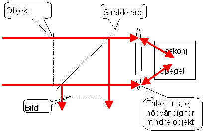

Faskonjugering

Ett mycket märkligt fenomen inträffar när tre fält med samma våglängd överlappar i ett material med stora ickelinjära koefficienter av tredje ordningen. Låt två av dem vara antiparallella och den tredje av godtycklig riktning, kallad prob eller ibland signal. Om två fotoner från de antiparallela strålarna ankommer samtidigt till en molekyl i materialet, så lagras under
handskakningstiden energi motsvarande två fotoner och rörelsemängden noll. Det sistnämnda eftersom rörelsemängd är en vektor. När molekylen efter någon femtosekund desperat letar efter möjligheter att göra sig av med energin finns tre möjligheter: Att lägga ut de nya fotonerna parallellt med de ursprunliga strålarna. Om detta inträffar är det enda som syns utifrån att en liten försening inträffat. Vi har fått ett ickelinjärt bidrag till brytningsindex.
Att lägga ut de nya fotonerna parallellt med de ursprunliga strålarna. Om detta inträffar är det enda som syns utifrån att en liten försening inträffat. Vi har fått ett ickelinjärt bidrag till brytningsindex.
 Att skicka ut energin med den första fotonen i en helt slumpmässig riktning, och "därefter" den andra i motsatt riktning. Detta är en form av ickelinjär spridning som inte har särdeles stor sannolikhet.
Att skicka ut energin med den första fotonen i en helt slumpmässig riktning, och "därefter" den andra i motsatt riktning. Detta är en form av ickelinjär spridning som inte har särdeles stor sannolikhet.
 Den tredje varianten är att hälften av energin läggs som en foton som förstärker den urspungliga tredje strålen. Resterande energi motsvarande en foton kommer då att sändas ut i en ny (fjärde) stråle som kommer att vara helt antiparallell med proben.
Den tredje varianten är att hälften av energin läggs som en foton som förstärker den urspungliga tredje strålen. Resterande energi motsvarande en foton kommer då att sändas ut i en ny (fjärde) stråle som kommer att vara helt antiparallell med proben.
Vi har alltså skapat en idealisk retroreflektor för proben. Denna har dessutom en märklig egenskap: Eftersom energin hela tiden kommer från de ursprungliga antiparallella strålarna, kan man styra "refektansen" till godtyckligt värde genom att öka dessas intensitet och/eller överlappssträcka med proben. Reflektanser på 100.000 har uppmätts, vilket förmodligen får anses något bättre än badrumsspegeln därhemma. Dessutom reflekteras ljuset alltså tillbaka till källan vilket aluminiumspeglar inte heller gör.
Mest njutningsfull blir uppenbarligen denna framställning om man fördjupar sig i matten. Men för det krävs en del
entusiasm.För oss andra kan det vara nog att diskutera lite tillämpningar:
Det faktum att ljuset går tillbaka mot sin källa och i vissa fall med en reflektans mycket större än 1 kan användas på en mängd sätt.
Till att börja med kan den användas för aberrationsfri avbildning 1:1, i första hand för transmitterande objekt (diabilder) eller spekulära ytor (t.ex litografisubstrat)
Uppställningen ser i så fall ut som i fig:
Ljuset transmitteras genom objektet ochg fram till stråldelaren. Där delas hälften av och försvinner uppåt (detta ljus är bort ut leken och kommer inte att återvinnas. Det ljus som gått igenom stråldelaren samlas av linsen mot den faskonjugerande spegeln (ej nödvändigt om spegeln är stor) . Där ger det upphov till den konjugerade strålen som exakt vänder tillbaka genom uppställningen. De
aberrationer som linsen gav upphov till upphävs och den del av ljusfältet som transmitteras genom stråldelaren kommer att återvända exakt till de delar av objektet där detta hade hög transmission. Det gör emellertid att den hälft som speglas nedåt av stråldelaren kommer att formera sig exakt till den ljusfördelning som fanns i objektet.En annan tillämpning är militär eller har med fusionskraft att göra (välj själv). En laser får belysa det fält där målet dyker upp (fientlig satellit eller vätekorn som ska antändas i fusionsreaktor). Reflexer från denna sprids åt alla håll och någon liten del träffar den/de faskonjugerade speglar som är uppställda bredvid belysningslasern. Om denna är pumpad så att dess relektans blir mycket hög kommer då en stråle att växa upp mellan mål och faskonjugator. …och därmed har man fått som man ville…
Till
innehållsförteckning